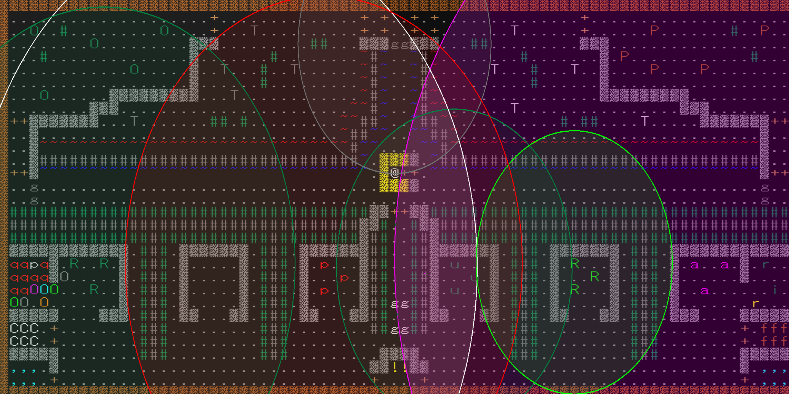

2023/09/09
辺境の地で受けられる重要クエスト。サーペント戦が卒業試験なら中間試験的な立ち位置。報酬のシヴァ靴は貴重な加速付きの足防具。ここをクリアできるかで今後の展開が大きく変わってくる。
敵配置

感知範囲

簡易ガイド

チャート概要
絶対に失敗したくない・低レベルで挑む場合の初心者向けチャート。
敵の感知範囲を上手く活かすことで、動きを固定化している。中心より右側へ行かなければ女王アリは起きない。
右のランダムモンスター配置に最初から起きている邪悪なモンスターがいた場合は、女王アリが起きて、”何かが聞こえた”というメッセージが出るので、チャートを放棄して全力で鎮圧する。
右のランダムモンスター配置に最初から起きている邪悪なモンスターがいた場合は、女王アリが起きて、”何かが聞こえた”というメッセージが出るので、チャートを放棄して全力で鎮圧する。
①右上の穴で上のモンスターを倒す
[倒すモンスター：岩トロル・ブラックトロル・究極DC]
右上の穴の上にいれば、下側のモンスターは寄ってこないので、上のモンスターを遠距離攻撃で一方的に倒せる。 失敗したときに備えてドロップを鑑定しておくのは大事。究極ダンジョンクリーナーは火耐性があるので右側からなら侵入できることに注意。
右上の穴の上にいれば、下側のモンスターは寄ってこないので、上のモンスターを遠距離攻撃で一方的に倒せる。 失敗したときに備えてドロップを鑑定しておくのは大事。究極ダンジョンクリーナーは火耐性があるので右側からなら侵入できることに注意。
②初期位置で穴熊
[倒すモンスター：それ・ジャート→ダゴン]
スタート地点で待つと、それとジャートが寄ってくる。それには対邪悪結界が有効。もたもたすると盗み逃げされてしまう。ジャートには反射とパニモンが有効。
倒し終わったらスタート地点から少し右下に行き、ダゴンを一匹だけ誘導する。反感装備を使う場合、加速して3～4tほどつけてから外すと一匹だけ釣れる。繰り返してダゴンを全滅。
スタート地点で待つと、それとジャートが寄ってくる。それには対邪悪結界が有効。もたもたすると盗み逃げされてしまう。ジャートには反射とパニモンが有効。
倒し終わったらスタート地点から少し右下に行き、ダゴンを一匹だけ誘導する。反感装備を使う場合、加速して3～4tほどつけてから外すと一匹だけ釣れる。繰り返してダゴンを全滅。
③左の通路で穴熊
[倒すモンスター：ボクラグ・ランダムモンスター→グレンデル・究極DC・ログログ]
全感知などでランダム配置に危険なモンスターがいないか確認した後、左の通路でボクラグを相手にする。大して強くはないが、バジリスクを召喚されると危険。暗黒耐性は埋めておくとリスクが下がる。
下側のモンスターを倒し終えたら上側のモンスターを穴越しに倒すし、寄ってこなかったグレンデルなども釣って同様に倒す。
全感知などでランダム配置に危険なモンスターがいないか確認した後、左の通路でボクラグを相手にする。大して強くはないが、バジリスクを召喚されると危険。暗黒耐性は埋めておくとリスクが下がる。
下側のモンスターを倒し終えたら上側のモンスターを穴越しに倒すし、寄ってこなかったグレンデルなども釣って同様に倒す。
④ガチャピンを処理する
[倒すモンスター：ガチャピン]
女王アリがガチャピンを起こしてしまうと、ガチャピンがどこかへ逃げたり、カオスブレスでアリが変化し地獄絵図になる可能性があるので先に処理する。
倒し方だが、LOS手段があれば画像のように射線を通しLOSするのが一番安全。エキサイトモンスターの指輪などがあるなら、つけると寄ってくるのでスタート地点まで誘導して穴熊。テレパシーがあれば確実に誘導できる。
女王アリがガチャピンを起こしてしまうと、ガチャピンがどこかへ逃げたり、カオスブレスでアリが変化し地獄絵図になる可能性があるので先に処理する。
倒し方だが、LOS手段があれば画像のように射線を通しLOSするのが一番安全。エキサイトモンスターの指輪などがあるなら、つけると寄ってくるのでスタート地点まで誘導して穴熊。テレパシーがあれば確実に誘導できる。
⑤女王アリと戦う
[倒すモンスター：女王アリ・ランダムモンスター→残ったモンスター]
スタート地点付近でテレポートの巻物を読み、女王アリの近くにテレポートするまでこれを繰り返す。近くに来たら、ランダムモンスターを確認し、召喚持ちがいれば先に倒す。 そうでなければ女王アリを耐火の薬を何服か飲み、女王アリを攻撃する。右側の通路で穴熊すると安全だが、火アリの処理が面倒になる。全てのアリを倒し終わったら残ったモンスターを適当に倒せばクリア。
スタート地点付近でテレポートの巻物を読み、女王アリの近くにテレポートするまでこれを繰り返す。近くに来たら、ランダムモンスターを確認し、召喚持ちがいれば先に倒す。 そうでなければ女王アリを耐火の薬を何服か飲み、女王アリを攻撃する。右側の通路で穴熊すると安全だが、火アリの処理が面倒になる。全てのアリを倒し終わったら残ったモンスターを適当に倒せばクリア。
持ち物など
武器
Cキーで確認できるターンダメージが250あれば十分。武器は★斬鉄剣程度のものと、サブの武器があればいい。酸/電撃スレイもかなり有効。★ストームブリンガーがあれば完璧。耐性
火炎
火アリ・アーチヴァイル・ヒドラなどの対策に必要。毒
無いとガチャピンの放射性廃棄物のブレスで種族などが変わってしまうほか、ヒドラなどのブレスが痛い。耐性の薬による一次耐性でも可。カオス
無いとダゴンを感知した際に幻覚などの効果、ジャートやガチャピンもカオス属性を使ってくる。 ダメージは体力回復の薬でごり押し、幻覚は癒しの杖か癒しの薬で治す、カオスによるアイテム破壊は予備を持っていくことで対応できなくもない。麻痺・混乱
いうまでもなく重要。混乱はカオス耐性があれば妥協できなくもない。酸電冷
ダゴンやランダムモンスター対策として埋めておきたい。盲目
ヒドラによる盲目ハメがある。テレポートの杖があれば、盲目状態でもテレポートできる。暗黒
バジリスク・闇のエルフの影・影のジャックなどに即死させられることがなくなる。重要度は低いが、自分は今まで三度バジリスクの暗黒ブレスで死んだ苦い記憶がある。巨大バジリスクは375点、闇のエルフの影は加速20で期待値354点。＠:敵詳細
| モンスター | シンボル | HP | 速度 | 耐性 | 抵抗 | 攻撃属性 | 召喚 | ドロップ | 警戒度 | 感知範囲 | 危険行動など |
|---|---|---|---|---|---|---|---|---|---|---|---|
| ダゴン | u | 1881 | 10 | 炎冷毒水 | 乱麻瞬 | 酸毒水 | 救援・悪魔1 | 上質4 | △ | 12 | ウォーター・ボール(50+d76)、救援召喚 |
| ジャート | p | 1000 | 10 | なし | なし | 沌 | なし | 上質4 | △ | 20 | 純ログルス(68+10d10)、テレポート |
| それ | . | 847 | 0 | 炎電 | 乱麻瞬 | 盲恐経盗 | ヒドラ召喚 | 特別3 | 〇 | 25 | 透明・ESP無効・盗み逃げ・ヒドラ召喚 |
| ガチャピン | R | 990 | 10 | 毒沌 | 乱麻瞬 | 毒沌知賢盗乱盲 | ヒドラ召喚 | 特別3 | △ | 10 | 放射性廃棄物/カオスブレス・盗み逃げ・ヒドラ召喚 |
| 女王アリ | a | 1500 | 10 | 乱麻 | アリ召喚 | 上質4 | ◎ | 30 | アリ召喚 |
＠:Tips
・ランダム配置は日数が進むごとにnasty生成で強力な敵が出やすくなるが、48日までならnasty生成は適用されない。
・何もしていないのに何かが聞こえたら女王アリが起きた可能性が高い。放置すると召喚合戦が始まったり、ガチャピンのカオスブレスでアリが変異したりするので、最優先で鎮圧したい。
・耐火の薬や天恵の巻物、ヒーローの薬は、効果時間中に飲むと効果を延長できる。事前にがぶ飲みするのして挑むのもアリ。
・隠密が高い(10～15以上)場合初手でテレポートして女王アリやそれ、ランダムモンスターを倒す戦略も有効。
・テレパシーがあれば、ダゴンやガチャピンを一匹だけテレパシーで感知した状態で反感装備をつけるとそのモンスターだけ誘導できる。
・何もしていないのに何かが聞こえたら女王アリが起きた可能性が高い。放置すると召喚合戦が始まったり、ガチャピンのカオスブレスでアリが変異したりするので、最優先で鎮圧したい。
・耐火の薬や天恵の巻物、ヒーローの薬は、効果時間中に飲むと効果を延長できる。事前にがぶ飲みするのして挑むのもアリ。
・隠密が高い(10～15以上)場合初手でテレポートして女王アリやそれ、ランダムモンスターを倒す戦略も有効。
・テレパシーがあれば、ダゴンやガチャピンを一匹だけテレパシーで感知した状態で反感装備をつけるとそのモンスターだけ誘導できる。